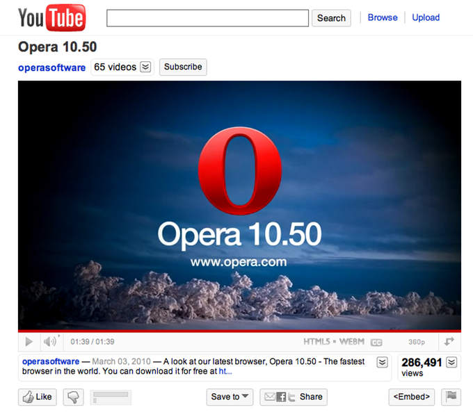

Opera supports the WebM video format
Update history:
- Article updated 1 July 2010 — replaced download links to our experiment WebM-enabled builds with links to Opera 10.60 (final).
Introduction
You’ll probably already have read up on and experimented with the new HTML5 <video> element, which allows us to include video inside an HTML page without the need for plugins (if not, read our Introduction to HTML5 video before going any further.) You’ll probably also be aware that there is somewhat of a disagreement over codecs going on. Opera and Firefox currently support the Ogg Theora video codec, while Safari supports the H.264 codec. Google Chrome supports both, while Microsoft have announced support for H.264 in IE9. This is not ideal, as to implement a cross-browser video with HTML5 you would need to encode and reference multiple video formats. For example:
<video controls="controls">
<source src="theora.ogv" type='video/ogg; codecs="theora, vorbis"'>
<source src="h264.mp4" type='video/mp4; codecs="avc1.42E01E, mp4a.40.2"'>
<p><a href="h264.mp4">Download the video</a>.</p>
</video>Enter WebM
Help is just around the corner — Google has released the VP8 video codec and WebM container format under royalty-free terms, with the aim of making a high quality, open video format available across different browsers and platforms. This was announced publicly at the 2010 Google I/O conference.
On the day of the announcement, Opera released an experimental WebM-enabled build. This feature is now part of the core functionality of Opera 10.60 and all of our future desktop browser releases.
Google’s YouTube property now supports WebM/VP8 — new videos are being made available in this format.
Opera has worked with Google to include WebM/VP8 at its launch because we want to support high quality, royalty-free formats, so no-one is locked out of viewing or publishing Web content. We’d like to thank Google and the others involved for making this available.
The WebM format details
The WebM format consists of VP8 video and Vorbis audio wrapped inside a .webm container. This format is based on the Matroska media container format. WebM offers high-quality video with fast seeking.
The new MIME type is video/webm; you can test whether a browser supports this format using the following line:
.canPlayType('video/webm; codecs="vorbis,vp8"')It's worth noting that the changes to GStreamer made by Opera needed to support WebM have been contributed to the GStreamer project, helping bring WebM playback to Linux desktop applications.
WebM examples
There is nothing new that you need to know about the HTML5 <video> syntax to embed WebM videos into your web pages; you just need video in the right format, and some new codec information. For example:
<video controls="controls">
<source src="sunflower.webm" type='video/webm; codecs="vorbis,vp8"'>
<p><a href="sunflower.webm">Download the video</a>.</p>
</video>You can see this code in action on our WebM simple example page (you'll be able to run this provided you are using an HTML5 <video> and WebM-supporting browser).
We have also made some more interesting examples available:
- WebM custom controls example (720p): This example plays a WebM video (Elephants Dream, created by the Orange Open Movie project), and makes custom controls available, created using the
videoAPI. - WebM custom controls example (360p): Same example, but with lower-quality video, for people on a slower connection.
- WebM fancy swap example: This example allows you to choose between different WebM-encoded videos by clicking on the thumbnails, which are then played via a
videoelement.
YouTube support for WebM
As mentioned above, YouTube now supports the WebM format — a number of videos are now being encoded using WebM, in addition to Flash and other formats, which will continue to be available for browsers that don’t support HTML5 <video>. To have the HTML5 videos served to you by default (where available), you can opt in to the HTML5 Youtube support at http://www.youtube.com/html5 (click the link at the bottom of the page.)
You’ll know when you’re accessing a WebM video because Youtube shows "HTML5·WEBM" as part of the controls UI.

In case you want some examples, the following videos have a HTML5·WEBM version available:
Encoding WebM videos
There are free and commercial tools available for creating and publishing content in the WebM format. For more details, have a look at the WebM Project site.
Further links about video
- Opera Labs: Welcome, WebM <video>!, by Håkon Wium Lie.
- Introduction to HTML5 video, by Bruce Lawson and Patrick Lauke
- Accessible HTML5 Video with JavaScripted captions, by Bruce Lawson
- Everything you need to know about HTML5 video and audio, by Simon Pieters
Chris Mills

Chris Mills is a web technologist, open standards evangelist and education agitator, currently working at Opera Software in the developer relations team. He spends most of his time writing articles about web standards for dev.opera.com and other publications (such as .net mag and A List Apart), giving talks at universities and industry conferences, and lobbying universities to improve their web education courses. He believes that education is the answer to everything, but in particular he is passionate about using education to improve the overall content quality, accessibility, usability and future-viability of the Web.
He is the creator of the Opera Web standards curriculum, contributor to the WaSP InterACT project, and coauthor of InterACT with web standards: A Holistic Approach to Web Design. In August 2011, he also accepted the position of co-chair of the newly-formed Web Education Community Group.
Outside work he is a heavy metal drummer, proud father of three and lover of good beer.
This article is licensed under a Creative Commons Attribution-Noncommercial-Share Alike 3.0 Unported license.
Comments
The forum archive of this article is still available on My Opera.
No new comments accepted.